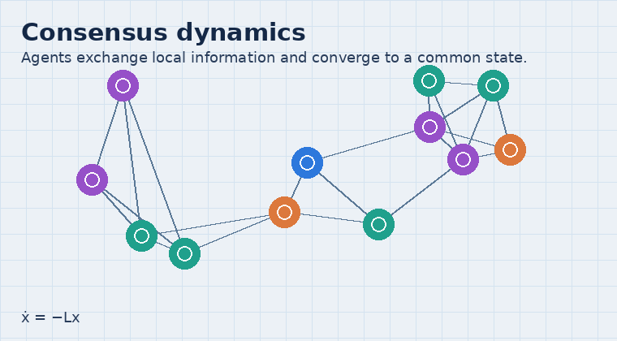
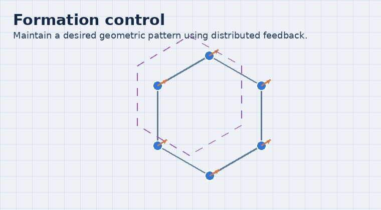

Distributed cooperative control
How can a group of agents (robots, sensors, vehicles) coordinate using only local communication? Distributed cooperative control studies algorithms and theory for consensus, formation, and tracking in networked multi-agent systems.

What students learn here
- Modeling of networked dynamical systems and graph Laplacians.
- Stability and convergence analysis (Lyapunov, invariance, nonsmooth systems).
- Distributed protocols under communication constraints, delays, and disturbances.
Illustrations

Consensus
Agents exchange information with neighbors and reach agreement on a common value/state.

Formation
Maintain a desired geometric pattern using distributed feedback and local measurements.
Typical applications
- Robot/UAV swarms, vehicle platoons, and cooperative sensing.
- Synchronization and coordination in power grids and cyber-physical systems.
- Distributed tracking of time-varying references with limited energy/communication.
Related reading
- Minimum-energy distributed consensus control of multi-agent systems: A network approximation approach (IEEE TAC, 2020).
- Distributed Average Tracking in Multi-agent Systems (book) (Springer, 2020).
- Consensus and Cooperation in Networked Multi-Agent Systems (survey) (Proc. IEEE, 2007).
- Consensus seeking in multiagent systems under dynamically changing interaction topologies (IEEE TAC, 2005).
Interested in joining? See Openings.